|
· 8. 8. 2004 : RÝCOVÁ-ŠIMÍČKOVÁ |
|
Divadílna Krvik Totr šťastně oznamuje sňatek naší primabaleríny Martiny Rýcové, nyní Šimíčkové, se zvukařem Švandova divadla Petrem Šimíčkem, nyní Šimíčkem. Stalo se tak včera v Ostravě-Porubě a Divadílna v celé své kráse tomu byla svědkem očitým, pitým a žratým. Akce to byla velice vtipná: tým jedenácti pidisvatebčanů vyrazil v pět ráno třemi auty. Těsně před Ostravou se na benzínce za ukrutného šoku všech okolojsoucích převlékli do všelikých hadérků, načež jsme přijeli tak brzy, že jsme se ještě lehce zpili v hospodě u kostela. Martině jsme pak připravili nejeden šok (a nejen my - pan farář zakopl, málem spadl ze schodů, a padající zakutálené prstýnky komentoval slovy "To znělo, jako by mi zuby vypadaly..."), když se ve své neveřícnosti nejprve nehorázně smáli (Čížo) ceremonii, poté gratulovali jako první po svědcích před osmdesáti čekajícími (Petře, Tome, Petro!), načež místo rýže zasypali novomanžele obsahem třiceti pytlíků marshmellows, které tolik poznamenaly premiéru Monopolů (Martino). 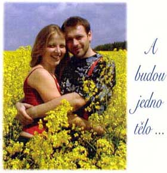 Zatímco svatebčané jedli, my jsme se jeli jen tak z legrace projet do Havířova a zpět, aby měla jedna radost. Jedenáct lidí, teď vlastně ještě Jana Soprová s rodinou, čili 14 bylo hrozně šťastných. Havířov je skvělé město, doufáme, že tam nebudeme někdy hrát. A pak jsme se po čtyřech hodinách a několika ztraceních pod vedením zkušeného jejího otce dostali vyčerpaní zpátky k nádherné Martince na kolibu ve Frenštátě, kde jsme působili po zbytek dne-noci velice komicky, ale prý také příjemně (he?). Rovnou přiznáme, že připravené vystoupení KT (tedy týž večer nazkoušené) se nestihlo (škoda, Martina ho chtěla a měla hrát Liho blues na kejtru), ale i tak byla sranda kopcovitá: Bogdan s Tomem prodali Petrovi manželku za stovku, načež ji ihned unesl pan Nebeský a ve finále ukradl Bogdan "panenky" z dortu (za tři tisíce...). Děcka, byla to brutální pařba. Na druhý den jsme si ještě počkali na výsledky svatební noci a pak vyrazili home, sweet home.
PS: Ani na vlastní svatbě nezapomněla Martinka na Monopoly (a to ještě před marshmellows!) a Pana Ahojku : |
|
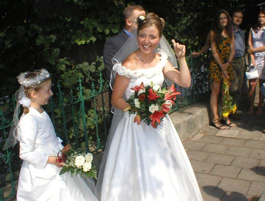 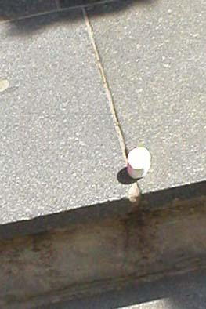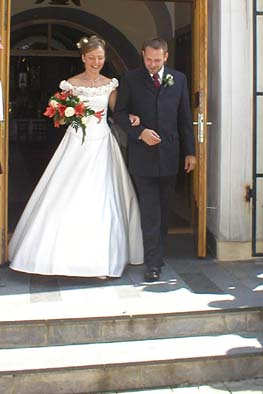 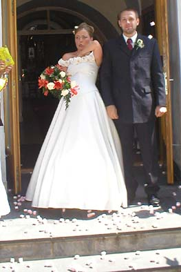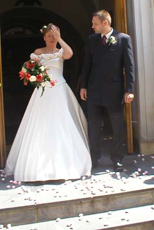 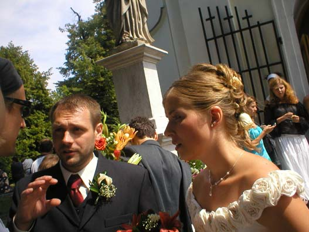 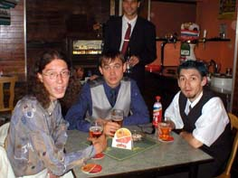 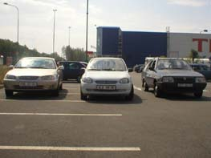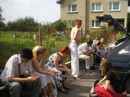 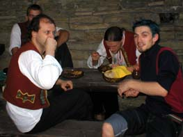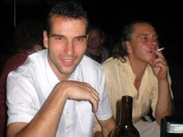 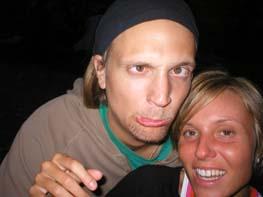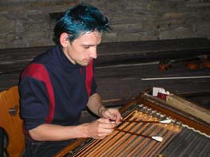 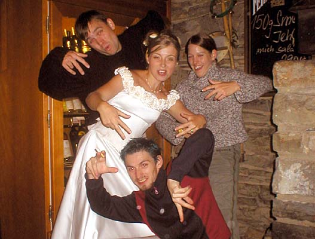 |